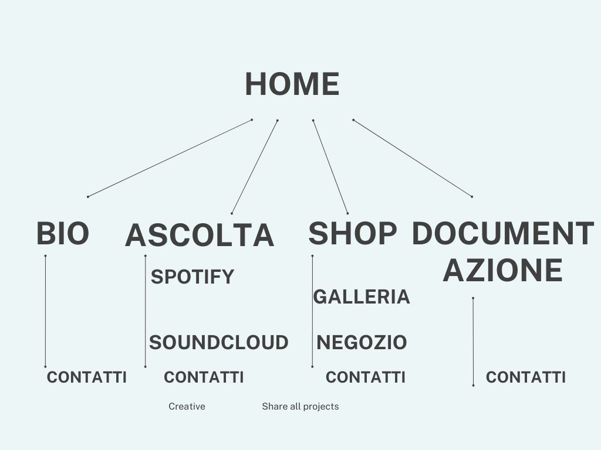
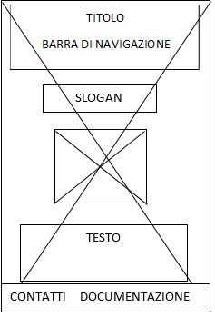
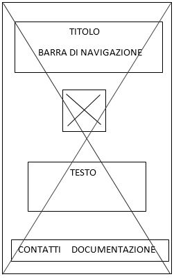
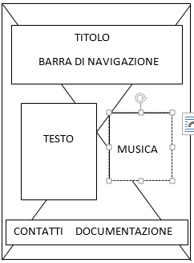
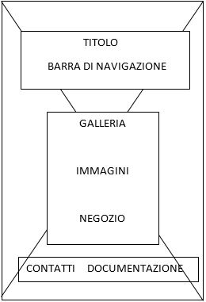

DOCUMENTAZIONE
1. ABSTRACT
Il sito web SONO.SKA è stato progettato con l’obiettivo di supportare un amico che ha deciso di intraprendere il percorso di cantante RAP.
Ad oggi i giovani che cercano di emergere nel settore della musica sono molti, ma ciò che manca tra loro è possedere un sito web: ecco perché partendo da un progetto universitario nasce l’idea SONO.SKA, un sito di un giovane talento italiano pronto ad emergere e ad avere un vantaggio sui suoi avversari grazie a una piattaforma con cui raggiungere maggiore visibilità grazie al collegamento di tutti i social, e l’opportunità di personalizzare il merch.
2. PROJECT MANAGEMENT PLAN
Benchmarking
- Obiettivi: SONO.SKA punta a promuovere un giovane cantante RAP all’inizio della sua carriera, per farlo conoscere a quante più persone possibili. Il sito web mette a disposizione delle informazioni personali dando la possibilità di conoscere meglio il cantante sia da parte dei fans che da eventuali produttori discografici.
- Target utente: il sito è rivolto principalmente all’ascoltatore di musica RAP, a partire da un’età di 13 anni ai 28 anni, variabile. È indirizzato anche ai produttori discografici in cerca di nuovi talenti. Dedicato anche a chi, scoprendo SONO.SKA sui vari social network, cerca maggiori informazioni sulla sua discografia, in continua crescita.
- Competitors: individuarli non è semplice, perché siti web di giovani talenti sono scarsi se non inesistenti, alcuni hanno solamente qualche riga della biografia scritta su Spotify o riportano alcune frasi celebri. Il sito web è essenziale per completare l’immagine dell’artista verso il pubblico, infatti gli autori che lo presentano sono molto conosciuti al pubblico, come ad esempio Fabri Fibra e J-Ax.
- Struttura e layout:

- Wireframe:




- Look and feel:
i colori prevalenti del sito web sono sulle tonalità del nero, grigio e bianco. Una palette di colori semplici, che riprendono lo stile del cantante nei suoi vari social network garantendo continuità con le varie piattaforme.
I font utilizzati sono:
- Roboto sans-serif per i titoli
- Ubuntu sans-serif per i testi
Le pagine presentano una struttura semplice ma d’impatto, dove le varie icone per spostarsi da una pagina all’altra sono ben visibili. Infatti al passaggio del cursore, le sezioni del menù cambiano da colore da bianco a nero evidenziandosi con lo sfondo bianco.
- Linguaggi e strumenti:
I linguaggi web utilizzati sono HTML e CSS.
Gli strumenti tecnologici utilizzati sono: immagini private inviate direttamente dal proprietario, nonché soggetto del sito; Pixabay per l’immagine di sfondo, Canva per la creazione della rappresentazione ad albero del sito e un’immagine della galleria, Word per la creazione dei wireframe per lo shop è stato creato un collegamento esterno al sito Printlogidtic, Google fonts per i font, Google Analytics per le visualizzazioni del sito, Github per la pubblicazione.
3 COMMUNICATION STRATEGY
- Background:
I giovani talenti ad oggi non hanno un sito ufficiale e non presentano neanche un buon collegamento tra le varie piattaforme, perdendo così l’opportunità di farsi conoscere nella loro interezza. Analizzando alcuni autori RAP famosi è emerso che certi non presentano un sito ufficiale, (é presente solo una pagina wikipedia), oppure presentano un sito dove sono visibili solamente le date dei concerti, lo shop e la discografia.
Il progetto SONO.SKA presenta una piccola autobiografica, presenta dei buoni collegamenti alle piattaforme per ascoltare musica (Spotify e Soundcloud), vedere i vari link ai social network (Instagram, Tiktok). Per ultimo c’è la possibilità di avere delle immagini del cantante, il tag e la frase celebre del singolo PIANO A così da avere un merchandising totalmente personalizzabile e unico, grazie a collegamento al sito Printlogidtic.
- Obiettivi comunicativi
L’idea di base di questo progetto è di far avere un sito di partenza, che crescerà man mano con il successo del cantante.
Gli obiettivi sono quelli di far interagire facilmente gli utenti con le piattaforme social, aumentare la credibilità e la serietà del sogno di diventare un cantante di rilievo. Si vuole inoltre mettere a disposizione dei fans l’occasione di costumizzare in maniera unica la propria maglietta. Questo dunque contribuirà a far conoscere SONO.SKA.
- Target audience e messaggio:
Il sito si rivolge agli ascoltatori:
- Abituali, che conoscono il cantante;
- Appassionati di RAP;
- Nuovi, che scoprono SONO.SKA attraverso qualche social (TikTok);
- Sponsor o produttori discografici, che riconoscendo il talento di SONO.SKA avranno l’opportunità di scoprire qualcosa in più;
L’età del target perciò sarà (13 anni ai 28 anni) per gli ascoltatori.
La soglia d’età invece crescerà se si tratta di sponsor e produttori (+28).
In aggiunta, il sito oltre a far conoscere SONO.SKA, facendolo sentire così ancora più vicino al pubblico, racchiude in sé il valore dell’unicità. Che si può cogliere dai pezzi delle sue canzoni e grazie al fatto che ci sia uno spazio dove acquistare prodotti totalmente personalizzabili. Questo farà sentire l’ascoltatore unico e libero di poter esprimere ciò che è, proprio come fa SONO SKA tra le righe dei suoi pezzi.
4 PROMOZIONE
Il sito verrà pubblicato online e promosso tramite:
- Link nei gruppi Whatsapp (includendo anche la pagina Instagram personale di SKA)
- Storie su Instagram (dei profili personali della sottoscritta e di SKA)
- Passaparola
Obiettivi: 100 visite al sito.
5 VALUTAZIONE DEI RISULTATI
_page-0001.jpg)